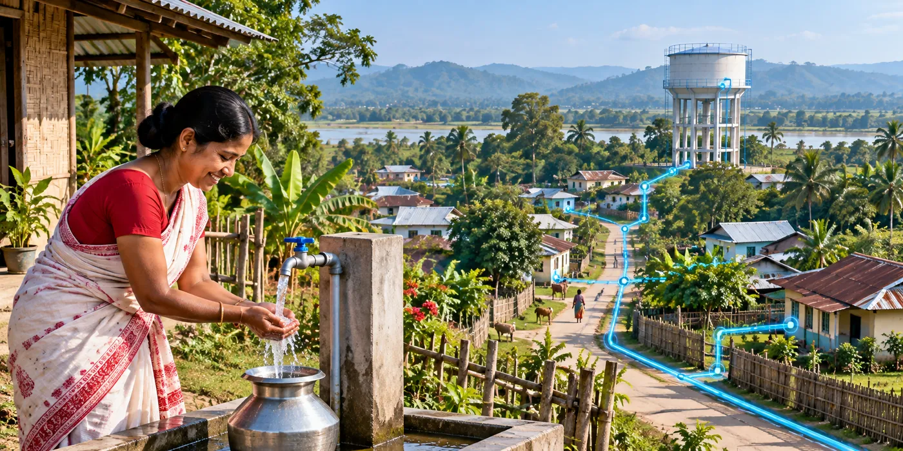

The Assignment
The Public Health Engineering Department (PHED), Assam required Detailed Project Reports (DPRs) for implementing rural water supply schemes under the Jal Jeevan Mission across Goalpara, Dhubri and South Salmara-Mankachar districts.
The assignment focused on planning sustainable rural water supply infrastructure to provide safe drinking water across a large number of villages, while addressing engineering, hydraulic design, infrastructure planning and project investment requirements.
Our Approach
CS TECH Ai prepared 2,492 Detailed Project Reports for rural water supply schemes across the three districts.
The engagement included:
- Preparation of Detailed Project Reports (DPRs)
- Engineering design and village water supply planning
- Hydraulic design
- Water Treatment Plant (WTP) planning
- Service reservoir planning
- Distribution network planning
- Project estimates and engineering documentation
- Water supply planning across the three districts under Jal Jeevan Mission
The DPRs provided the engineering and planning framework required for developing rural drinking-water infrastructure across the project area.
Technology & Delivery
The assignment combined engineering design, hydraulic planning, water-treatment infrastructure and distribution-network planning within an integrated DPR-development process.
The planned infrastructure covered a 3.29 million design population through 2,500 WTPs, 2,400 service reservoirs and approximately 14,300 km of distribution network, with provision for 4.5 lakh Functional Household Tap Connections (FHTCs).